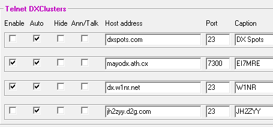

Rick, This is what I have running. I have never understood if there is a reason to have more than one running unless each may not have the same set of spots. If that is true, better have more than one but I do not know how this works and why there would be differences. Not sure if Dave's FAQ pages will explain it. I get bogged down in the weeds of details he provides! Al N6TA  -----Original Message----- Can anyone suggest some good sites to use in Spot Collector? It seems to be (arbitrarily) limited to 3 sites or so; is there an option for that? Rick N6RK _______________________________________________ Chat mailing list |